Une sélection des projets
les plus récents.
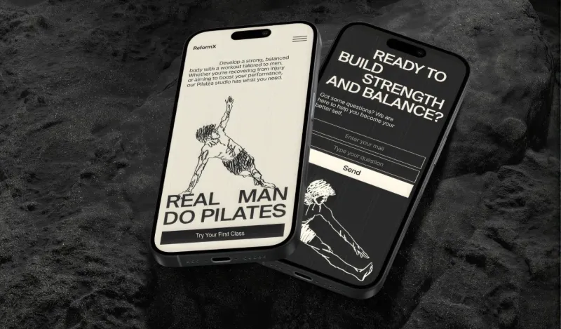
Pilates
Pilates pour les hommes 28-50 ans, pas la cible habituelle. Construire le corps comme un architecte.
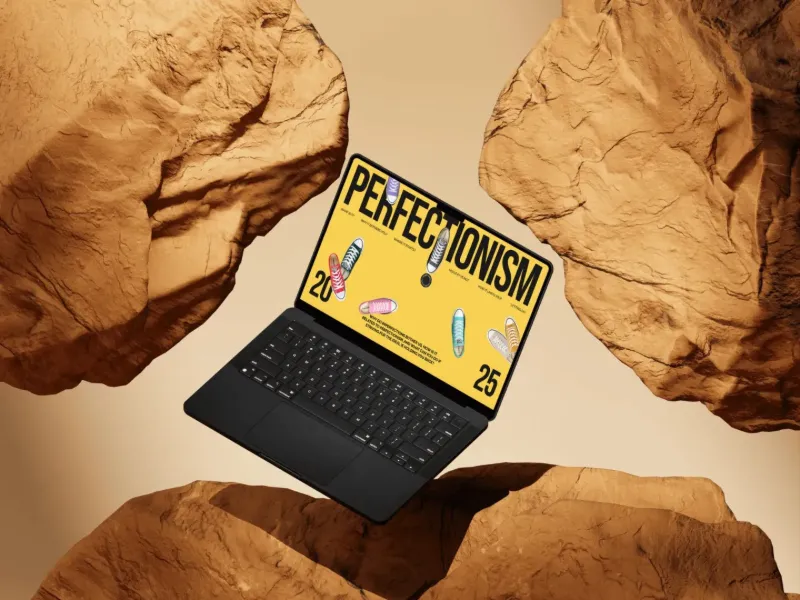
Longread
Pourquoi un objet légèrement de travers dans une rangée parfaite nous dérange autant ?
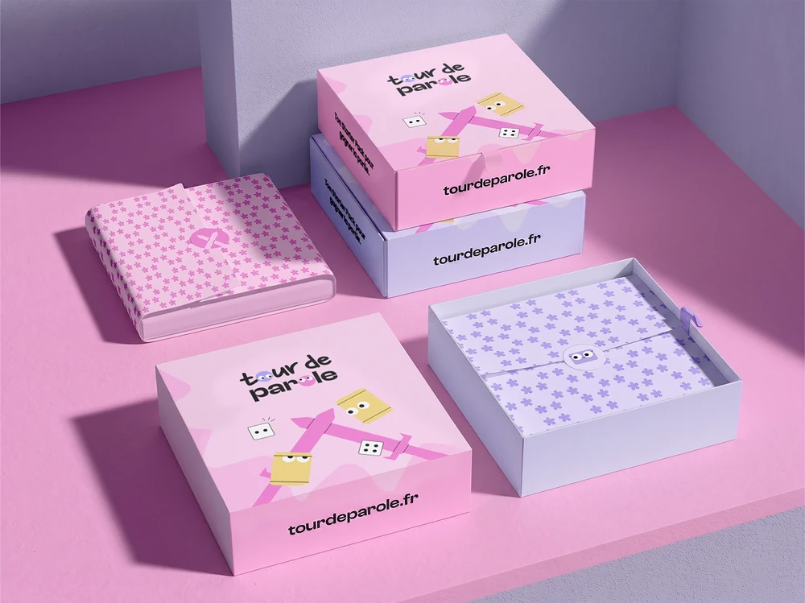
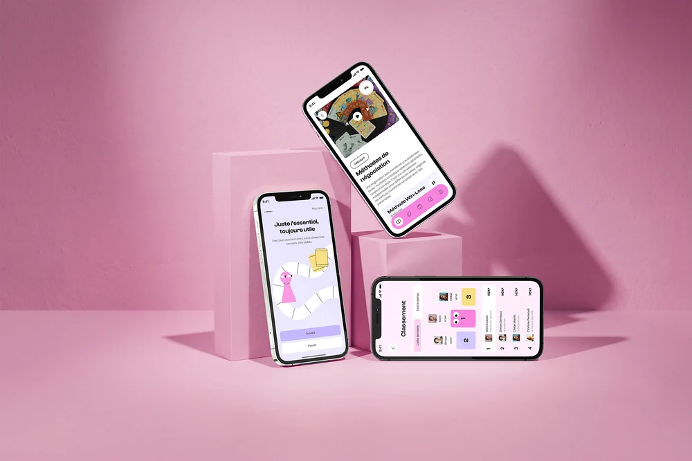
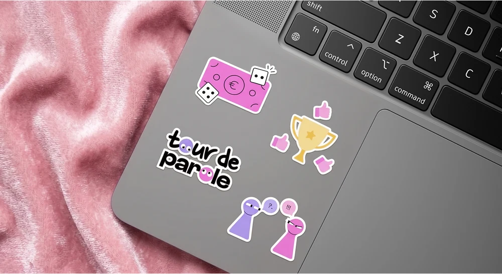
Tour de parole
Une école en ligne enseigne aux jeunes à négocier : salaire, tarif, entretien de manière ludique.
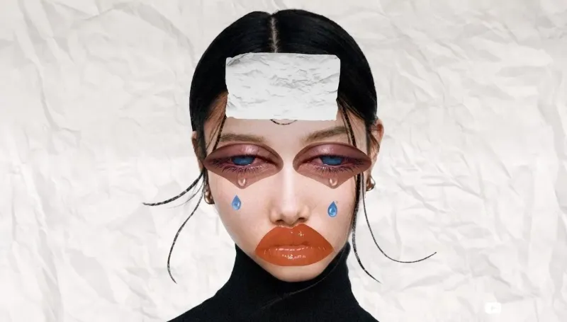
Inside out
Un motion sur la santé mentale : l'anxiété sociale et le sentiment d'être submergé.
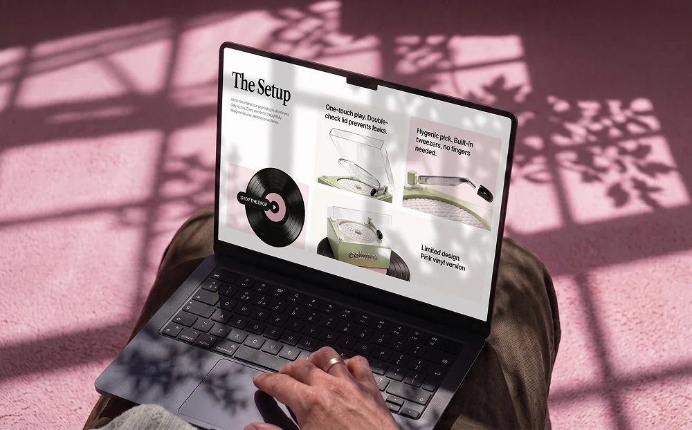
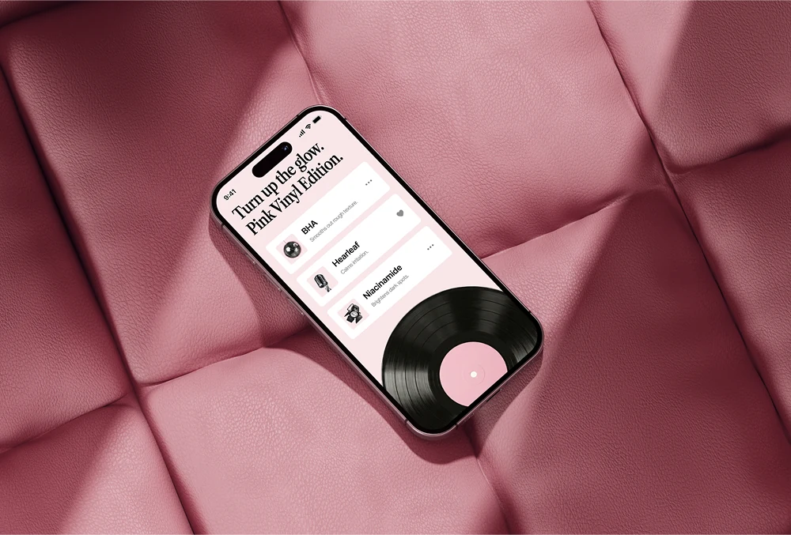
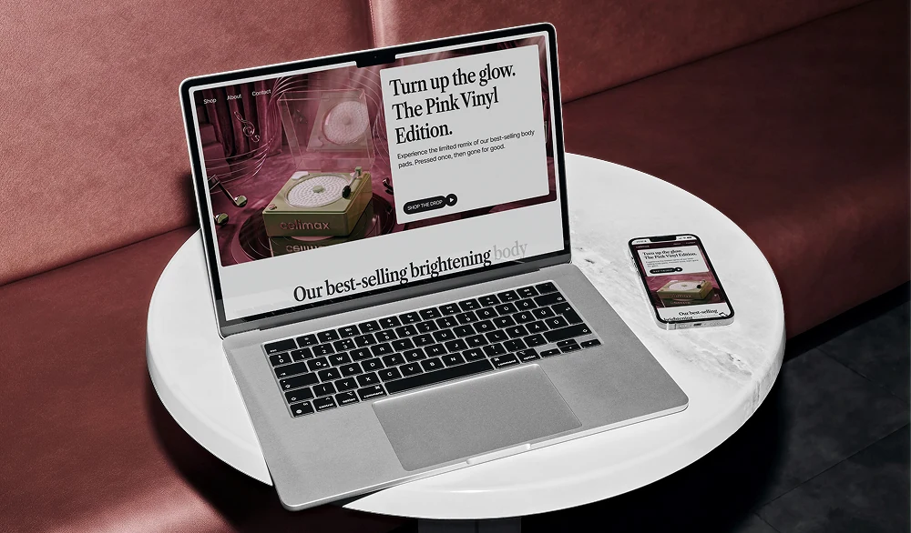
Celimax
Un pot de soin repensé en mini tourne-disque, pour Celimax — marque coréenne que j'adore.
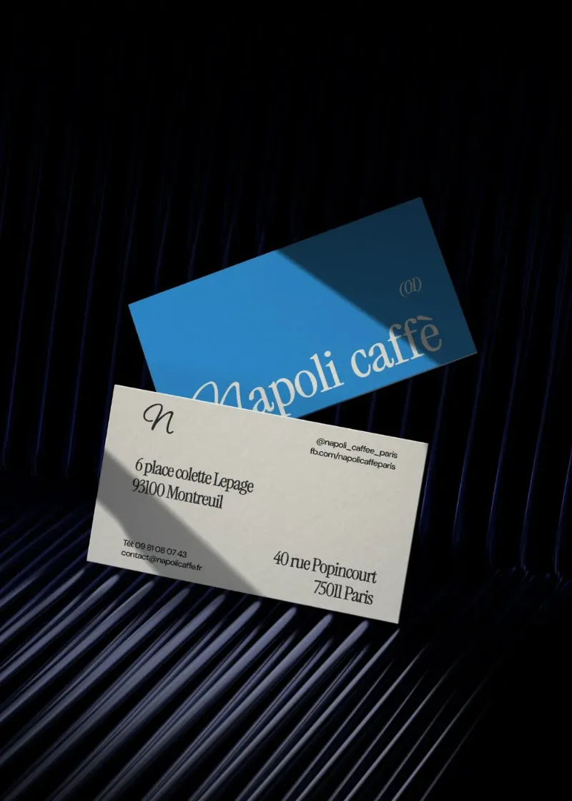
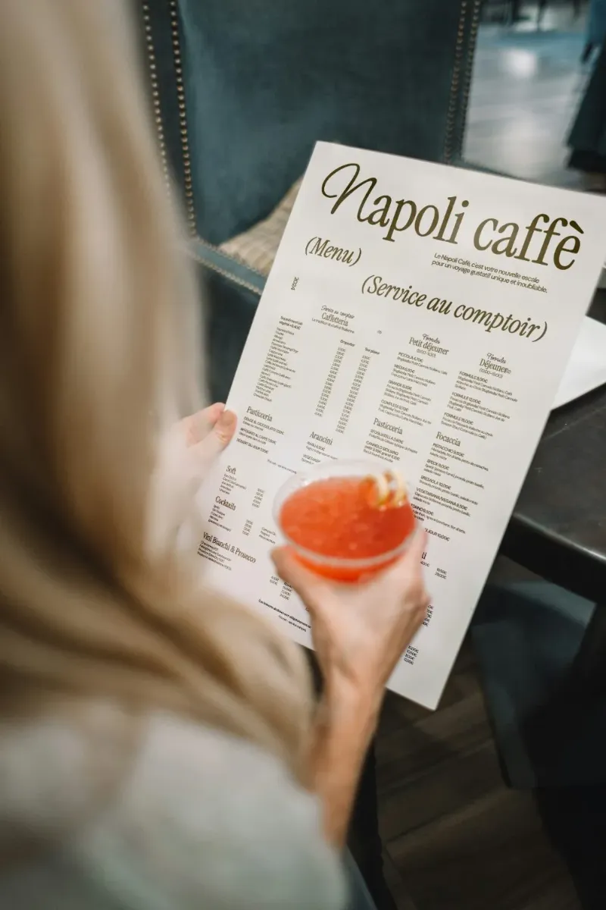
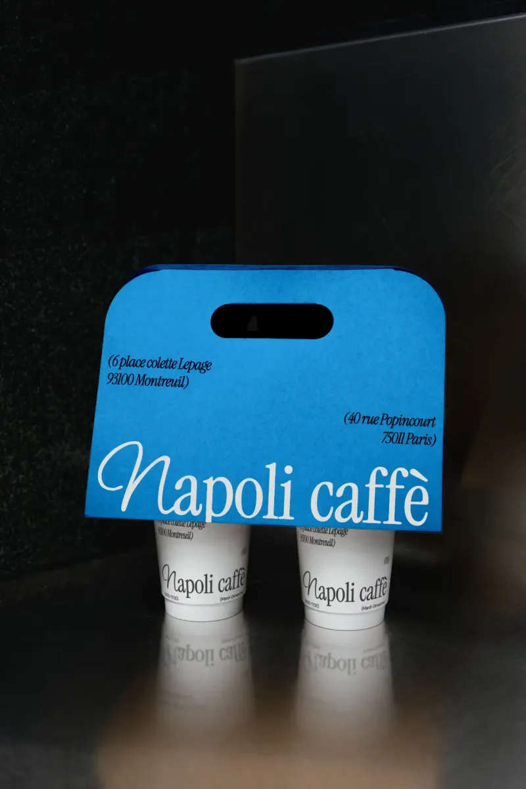
Napoli
Un vrai bout d'Italie ouvert à Montreuil — focaccias, pâtisseries italiennes, espresso napolitain.